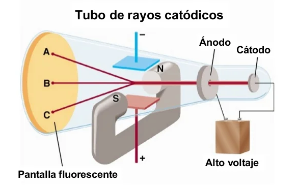
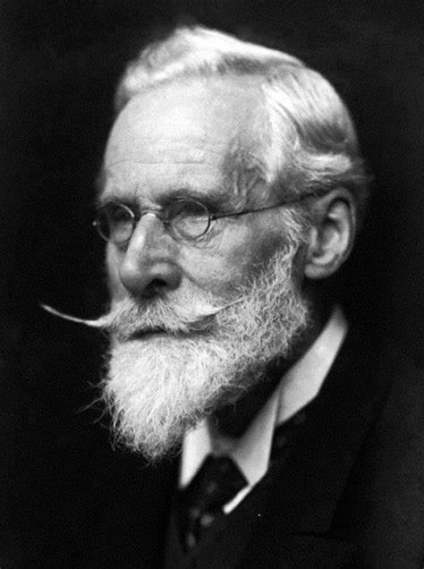
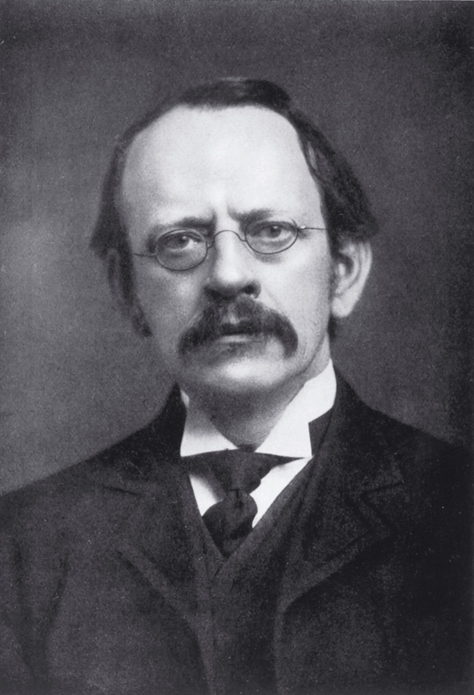
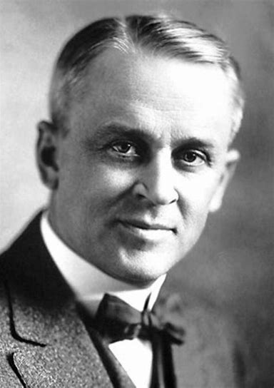
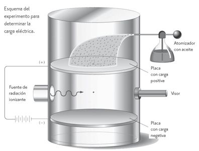

El descubrimiento del electrón
En 1875, el inglés William Crookes observó que si en un tubo que contiene gas a muy baja presión se introducen dos electrodos y entre ellos se aplica una diferencia de potencial elevada, aparece un flujo de corriente que parte del cátodo (electrodo negativo) y viaja hacia el ánodo (electrodo positivo). Goldstein los denominó rayos catódicos.

Pocos años más tarde, en 1897, el inglés Joseph John Thomson estudiando el comportamiento de los rayos catódicos en presencia de campos eléctricos y magnéticos, demostró que los rayos catódicos realmente se trataban de partículas cargadas negativamente. Consiguió hallar su relación carga/masa. Les llamó electrones.
Thomson comprobó que la relación carga/masa era independiente de la naturaleza del gas encerrado en el tubo, esto le hizo pensar que los electrones debían estar presentes en todos los átomos de la naturaleza.
Robert Millikan determinó la carga eléctrica del electrón 1,602·10-19 culombios (C) con el experimento de la gota de aceite. Este valor constituye la carga mínima que puede transportar a una partícula. Una vez conocida la carga del electrón, pudo determinarse su masa, que es de 9,107·10-31 kg.
Wikipedia: Experimento de la gota de aceite



